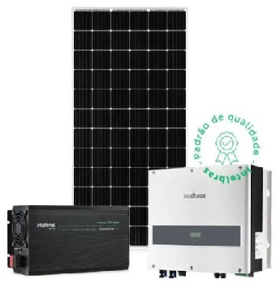

IntelBras
A Intelbras oferece diferentes modelos de módulos fotovoltaicos. Entre eles, destacam-se:

Módulos monocristalinos: apresentam maior eficiência (acima de 20%) e são recomendados para locais com menor espaço disponível.

Módulos policristalinos: possuem eficiência um pouco inferior, mas boa relação custo-benefício.
Características gerais: potência variando de 330 W a 550 W, eficiência entre 18% e 21%, garantia de performance de até 25 anos.
BR-101, km 210 - Área Industrial, São José - SC